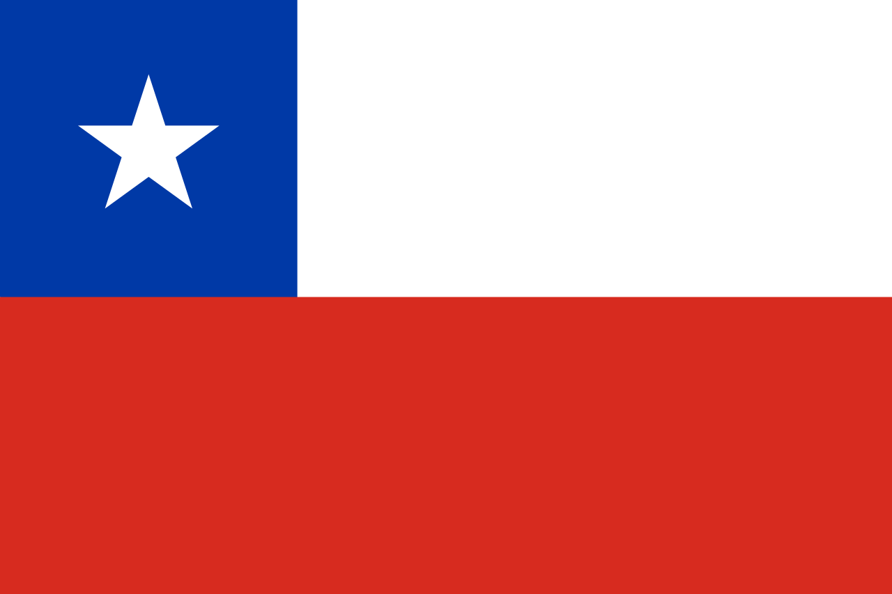
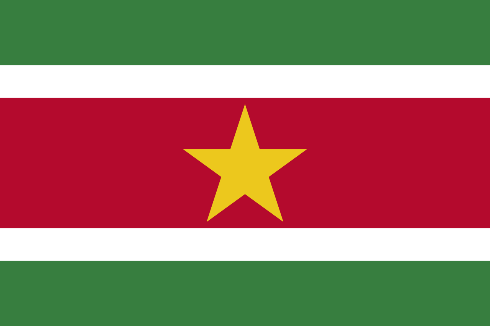
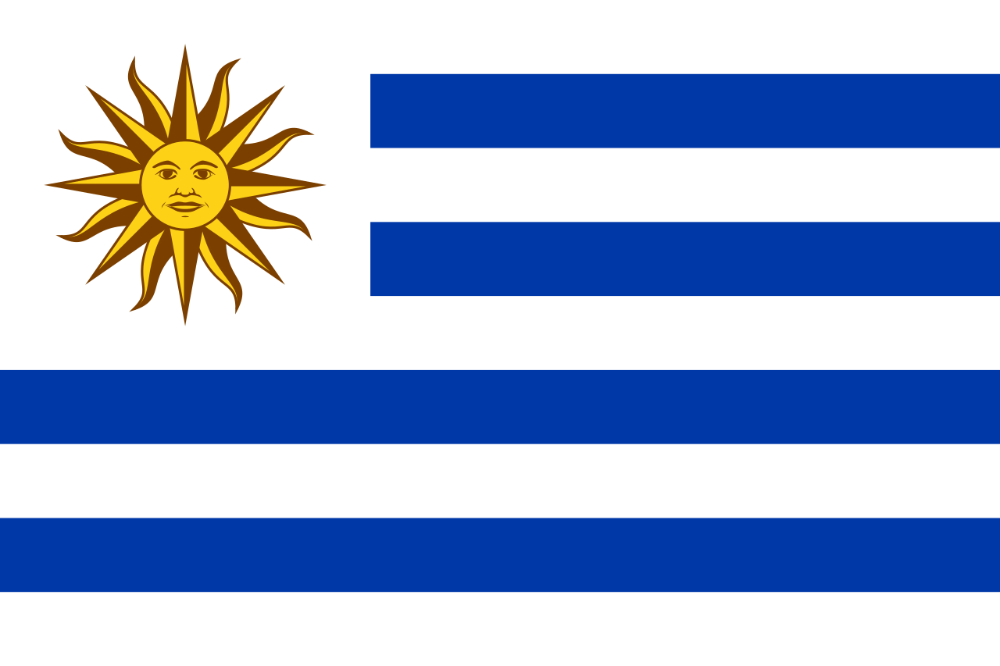

Dél-Amerika
Argentína

Bolívia
.jpg)
Brazília

Chile
Kolumbia

Ecuador

ARGENTÍNA
Főváros
Buenos Aires
Lakosság
kb. 45 000 000 fő
Terület
2 780 400 km²
Államforma
Alkotmányos Köztársaság
Pénznem
Peso
Az argentinokról röviden
Az argentinok többsége olasz, spanyol és német származásúak. Az emberekre jellemző a hazaszeretet a vallásosság. Törekszenek arra, hogy úgy éljenek, ahogyan azt a vallásuk előírja. Szeretik megismertetni az országukat más emberekkel, a szokásaikkal, jellegzetes ételeikkel, és a focival.
Jellegzetes ételeik
Dél-argentin nutella, dulce de leche (karamella), asado (bbq), empanadas (rágcsálnivaló) - darált hús sonkával és sajttal. Kevés fűszert használnak, kerülik a hízlalóó ételeket. Nemzeti teájuk a mate.
Híres argentín emberek
Lionel Messi
Diego Maradona
Carlos Gardel
Julio Cortázar
Ernesto "Che" Guevara
Alberto "Tito" Vilanova
BOLÍVIA
Főváros
Sucre
Lakosság
kb. 11 000 000 fő
Terület
1 098 581 km²
Államforma
Alkotmányos Köztársaság
Pénznem
Bolíviai boliviano
BRAZÍLIA
Főváros
Brazíliaváros
Lakosság
kb. 214 000 000 fő
Terület
8 515 767 km²
Államforma
Föderatív köztársaság
Pénznem
Brazil real
A latin-amerikai régió
Az amerikai indiánokkal, spanyolokkal és portugálokkal való keveredés jellemző a latin-amerikai régióra. A kolumbiaiak, a peruiak, az ecuadoriak, a bolíviaiak és a guatemalaiak között a mesterlövészek, a mulattok és a zambók, valamint az inka és az azték leszármazottak találhatóak.
A nagyvárosok központjában a gyarmati kor épületei és a barokk stílusú templomok állnak, míg a városok peremén hatalmas szegénynegyedek jönnek létre. A vidékiekről nagy tömegek áramlanak a városokba, és sokan csak összetákolt, víz és csatorna nélküli kunyhókban tudnak letelepedni.
Feltörekvő gazdaság
Brazília azon kevés országok egyike, amelyek gyorsan növekednek a feltörekvő piacok között. Brazíliaiváros, amelyet világhírű építészek terveztek, a brazil belső területeinek fejlesztése érdekében jött létre. Rio de Janeiro helyét vette át a fővárosként 1960 óta.
Mezőgazdaság
Brazília mezőgazdasága korábban nagyon egyoldalú volt, amely csak néhány terméket termelt, mint például kávé, cukornád és gumi. Azonban a termékskála ma már jóval szélesebb. A világ élelmiszerigényének növekedése miatt a brazil mezőgazdasági termékek iránt nagy a kereslet.
Ásványkincsek
Brazília a világ legjelentősebb ásványkincsek (pl. vasérc, mangánérc és bauxit) kitermelő országai közé tartozik. Kína és az Egyesült Államok a legfontosabb vásárlói.
Ipar
A feldolgozóipar fontos szerepet tölt be Brazília gazdaságában. A Brazil-felföldről kitermelt érceket a bányák közelében dolgozzák fel, főleg Belo Horizonte kohászati központjában. Az ipari ágazatok többi része a tengerparti sávon, Rio de Janeiro és São Paulo között koncentrálódik. São Paulo az egész Latin-Amerika legfontosabb ipari, kereskedelmi és pénzügyi központja, ahol az autógyártás a legnagyobb húzóágazat. Santos, São Paulo kikötővárosa Brazília "kapuja", ahol közel egyharmada a brazil áruforgalomnak. A mezőgazdasági terményeket, amelyeket nem exportálnak, a helyi élelmiszer-, textil- és cipőipar dolgozza fel a termőkörzetekben.
Kapcsolatok
Brazília széleskörű gazdasági kapcsolatokkal rendelkezik, ami eltér a legtöbb latin-amerikai országtól, mert gazdasági teljesítménye kevésbé függ az Egyesült Államoktól.
Fejlődés
Az elmúlt években a gazdasági fejlődésnek köszönhetően sok új munkahely jött létre Brazíliában. Az emberek dolgoznak és fizetést kapnak, amit a helyi üzletekben költenek el, ezzel növelve a keresletet a brazil termékek iránt.
Emberek
A brazil emberek hangosan nevetnek és beszélgetnek, nyíltan kimutatják érzelmeiket, ami miatt sokszor úgy tűnik, mintha veszekednének. Testbeszédük is elég intenzív. A brazil lakosság nagy része vallásos, a legnépszerűbb vallás a katolikus vallás.
Ételek
A brazilok nagyra értékelik az ízletes ételeket, és különösen büszkék az országuk nemzeti ételeire. Az otthon készített ételek rendkívül gazdagok és ízletesek. Szeretik a sokféle gyümölcsöt és zöldséget. Szeretik az édességeket és a gyorséttermeket is. Általában a reggeli gyors és egyszerű: kávé, kenyér, pão de queijo (sajtos kenyér), vaj, édes sütemények és banán mézzel. Ebéd és vacsora nagyon gazdag és tápláló, gyakran ugyanazt az ételt eszik vacsorára, amit ebédre ették. Ez általában rizs, bab, hús, saláta és desszert vagy gyümölcs. Vannak helyek, ahol délután is enni lehet, például kis süteményeket, kávét vagy teát.
Híres brazil emberek
Pelé
Ronaldo Nazario
Ronaldinho
Tom Jobim
Caetano Veloso
Chico Buarque
Gal Costa
Antonio Carlos Jobim
CHILE
Főváros
Santiago
Lakosság
kb. 17 000 000 fő
Terület
756 000 km2
Államforma
Köztársaság
Pénznem
Chilei peso
Emberek
Chile egy viszonylag homogén ország, amelyben kevés különféle etnikai csoport és kultúra található. Az emberek kevésbé laza magatartást mutatnak, mint a trópusi latin-amerikai országokban, és többnyire konzervatívok. A chileiek között a legnagyobb különbséget a társadalmi osztályok okozzák. Bár az elmúlt években nőtt a társadalmi mobilitás, a rétegek még mindig élesen elkülönülnek egymástól jövedelem alapján. Habár a katolikus vallás meghatározó, a chileiek nagyon toleránsak más vallásokkal szemben. A pontosság fogalmát rugalmasan értelmezik, a késés szinte mindennapos jelenség. Baráti találkozókon akár fél órát, vagy akár egy órát is lehetnek kések.
KOLUMBIA
Főváros
Bogotá
Lakosság
kb. 47 000 000 fő
Terület
1 141 748 km2
Államforma
Köztársaság
Pénznem
Peso
Emberek
Kolumbia 47 milliós népe hihetetlenül sokféle emberből áll össze. Vannak köztük szőke, fekete, mesztic, bennszülött emberek, mindannyian nagyon latinos vonásokkal. A kolumbiaiak általában hangosan beszélnek és nevetnek, ami néha akár veszekedésnek tűnhet. Beszélgetéskor hajlamosak megérinteni a másikat. A férfi és női szerepek elkülönülnek a társadalomban és a családban. Általában az apa a családfő, és az ő döntéseit mindenki elfogadja és tiszteletben tartja. A legtöbb család aktívan gyakorolja vallását és rendszeresen jár a templomba.
Ételek
A kolumbiaiak általában sok szénhidrátot fogyasztanak és szeretnek sokféle összetevőt használni, például különböző húsokat, babot, burgonyát, rizst, tojást, salátát, avokádót, és patacont Van néhány specialitás, amit mindenképpen érdemes kipróbálni, például az ajiaco levest Bogotában vagy a bandeja paisat Medellínben.
Ecuador
Főváros
Quito
Lakosság
kb. 17 000 000 fő
Terület
283 560 km2
Államforma
Köztársaság
Pénznem
Dollár
Guyana

Paraguay

Peru
.jpg)
Suriname
Uruguay
Venezuela
.jpg)
Guyana
Főváros
Georgetown
Lakosság
kb. 750 000 fő
Terület
214 970 km2
Államforma
Köztársaság
Pénznem
Dollár
PARAGUAY
Főváros
Asunción
Lakosság
kb. 7 000 000 fő
Terület
406 752 km2
Államforma
Köztársaság
Pénznem
Guaraní
Emberek
Paraguay lakossága 6 millió fő, közülük 1 millióan élnek a fővárosban, Asunciónban. A lakosság 98%-a az ország keleti részén él, és közel 50% városi környezetben lakik. A két hivatalos nyelv a spanyol és a guaraní, az őslakos nyelv. A paraguayiak többsége mindkettőt beszéli, és előfordul, hogy családtagok vagy iskolatársak közötti beszélgetés is guaraní nyelven zajlik. Hangosan beszélnek és sokat gesztikulálnak, ami külső szemlélőnek úgy tűnhet, mintha veszekednének, de ez náluk normális kommunikációs stílus. Nagyon fontos számukra a barátság és a hűség, mind a család, mind a barátok felé. Segítőkészek, még akkor is, ha ez számukra kényelmetlenséggel jár. A paraguayiak általában nagyon vidámak és mosolygósak, és azt tartják, hogy ők a világ legboldogabb emberei, mert az élet apró örömeit is nagyon tudják értékelni. Azonban szembe kell nézniük a gazdagok és szegények közötti hatalmas különbséggel, ami láthatóan megosztja a társadalmat. A katolikus vallás a legelterjedtebb, a lakosság 90%-a rendszeresen jár templomba.
Ételek
Az ebéd és a vacsora a főétkezések Paraguayban, esetlegesen beiktathatnak délutáni uzsonnát is. A konyha guaraní gyökerekkel rendelkezik, és naponta fogyasztanak húst, amit zöldségekkel, rizzsel, tésztával vagy krumplival főznek. Az étkezésekhez szokás sörözni vagy bort fogyasztani, de az alkoholfogyasztás korhatára 20 év. Az ételkínálás vagy az étel megosztása másokkal az udvariasság része. Néhány családnál az asztalterítő szalvétaként szolgál. Néhány tipikus paraguayi étel és ital: sopa paraguaya (kukoricából, tejből és tojásból készült pite), avatí mbaipy (kukorica leves), chipa (sajttal és tojással készült kenyér), yerba maté, terere (helyi gyógynövény tea) és caña (cukornádpálinka).
PERU
Főváros
Lima
Lakosság
kb. 32 000 000 fő
Terület
1 285 216 km2
Államforma
Köztársaság
Pénznem
Sol
Ételek
Peru híres a burgonya, kukorica és chili paprika alapú ételeiről, melyek szinte minden étterem étlapján megtalálhatók. Több ezer fajta burgonya létezik az országban, és számos változatban készítik el őket. A helyiek szeretik a pikáns ízeket, és szívesen fűszerezik a csirke- és halételeket chili és lime keverékével. Számos étterem specializálódott tengeri ételekre, így a bőséges választéknak köszönhetően mindenki megtalálhatja a neki megfelelő menüt. Az ország nemzeti étele a Lomo Saltado, amely számos különböző módon elkészíthető marhahúsból, fokhagymából, chiliből és burgonyából készült egytálétel. A két fő étkezés általában könnyű reggelit és kiadós ebédet jelent Peru-ban, amelyek gazdagok a tejtermékekben.
Emberek
Peru Dél-Amerika második legnagyobb országa, amelynek lakossága 30 millió emberből áll, és etnikai, vallási és nyelvi szempontból is nagyon sokszínű. Az országban indiánok, meszticek és fehérek is megtalálhatók. A legtöbb ember katolikus vallású, és a vendégszeretet jellemzi őket. Az emberek humorosak és energikusak, és nem riadnak vissza a kemény munkától sem. Mivel sokan beszélnek idegen nyelvet, és az emberek többsége tiszteli a külföldieket, bátran fordulhatunk hozzájuk segítségért. Az emberek többnyire pozitívan gondolkodnak, és igyekeznek a dolgok pozitív oldalát előtérbe helyezni. Fontos számukra az egymás iránti szeretet és tisztelet kifejezése is. Az országban évente több mint 3000 híres fesztivál kerül megrendezésre, amelyek a tradicionális viseletet, zenét, táncot és rituálékat mutatják be.
SURINAME
Főváros
Paramaribo
Lakosság
kb. 560 000 fő
Terület
163 270 km2
Államforma
Köztársaság
Pénznem
Suriname dollár
URUGUAY
Főváros
Montevideo
Lakosság
kb. 3 400 000 fő
Terület
176 215 km2
Államforma
Köztársaság
Pénznem
Uruguayi peso
Információk
Uruguay a demokrácia, béke, korrupció elleni küzdelem és az e-kormányzás terén Latin-Amerika éllovasa. Az ország a Globális Terrorizmus Indexen a legalacsonyabb rangsorolt dél-amerikai ország, és a kontinens második helyén áll a gazdasági szabadság, jövedelmi egyenlőség, egy főre jutó jövedelem és a külföldi befektetések terén. Az emberi fejlődési index, a GDP növekedése, az innováció és az infrastruktúra szempontjából Uruguay a kontinens harmadik legjobb országa. Uruguay Latin-Amerika egyik legprogresszívebb szociális országának számít.
VENEZUELA
Főváros
Caracas
Lakosság
kb. 28 000 000 fő
Terület
916 445 km2
Államforma
Köztársaság
Pénznem
Bolívar
Ellenőrizd a tudásod Dél-Amerikáról!
ZÁSZLÓ KITALÁLÓ
FŐVÁROS KITALÁLÓ
SOROLD FEL!